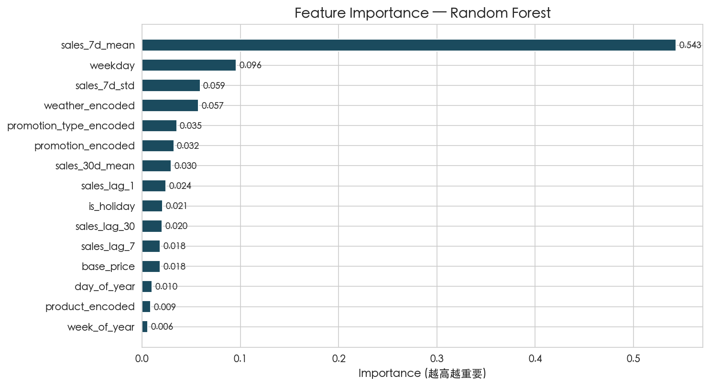
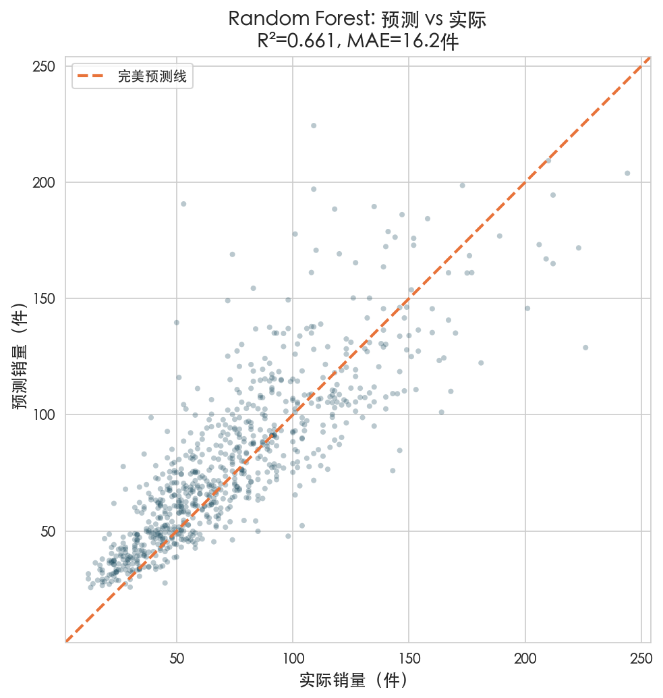
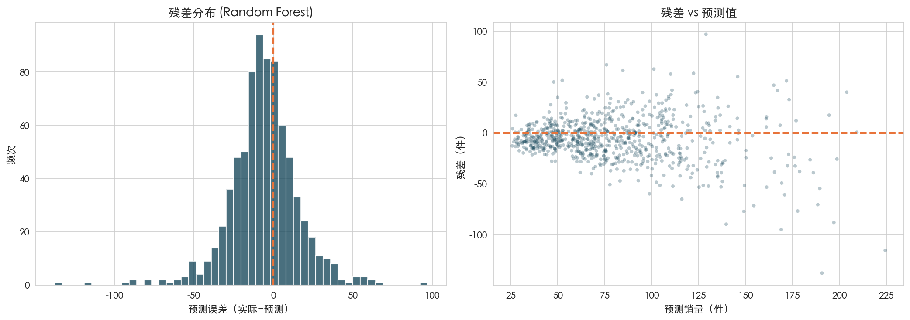
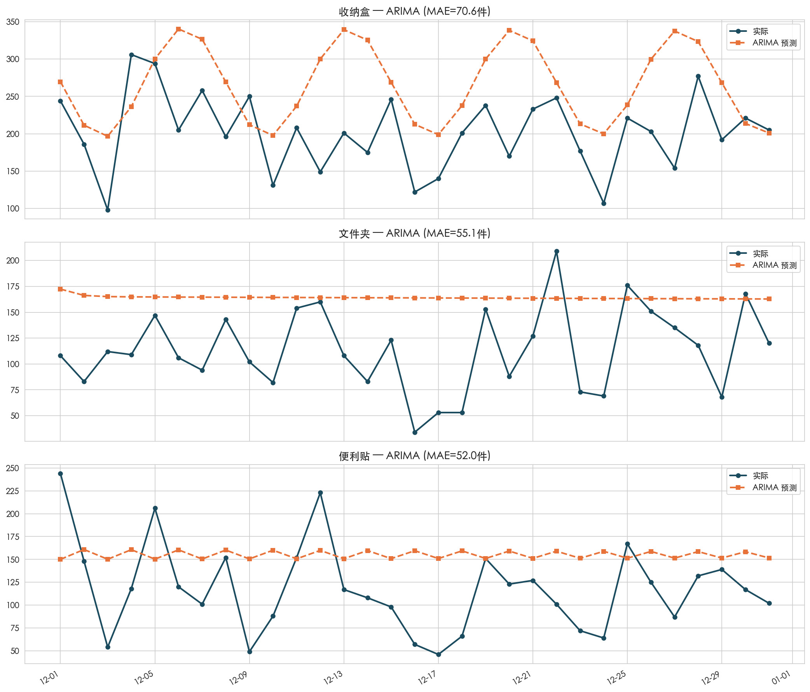
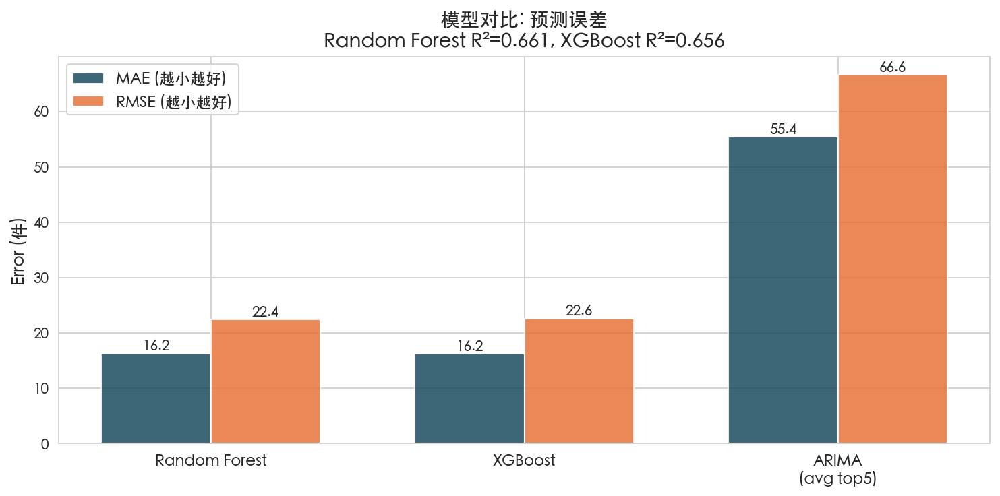
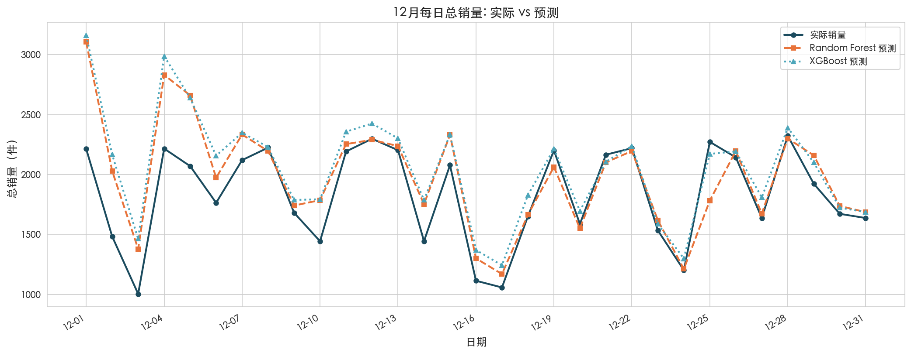

方案二：机器学习预测"明天某产品能卖多少件"
门店每天要决定每款产品备多少货。备多了占库存，备少了丢销售。如果能提前知道明天大概卖多少件，就能精准备货。本项目用 2023年1-11月的数据训练模型，预测12月的销量，看哪种方法最准。
使用工具：Random Forest (scikit-learn) ARIMA (statsmodels) XGBoost (需libomp)
这是预测建模中最容易犯也是最致命的错误——把预测时根本不知道的信息喂给模型。
你要预测明天股票涨跌，但你的模型里有一个特征是"明天收盘价"——那模型当然100%准。但明天收盘价在你预测时根本不知道。这就叫数据泄露。模型训练时看起来很厉害，实际一用就废。
本项目明确排除以下 3 个泄露特征：
| 被排除的列 | 为什么不能用 |
|---|---|
| sales_amount（营收） | 营收 = 销量 × 单价。既然你知道营收，你当然知道销量——它直接包含了目标变量信息 |
| inventory（库存） | 当天库存量在当天结束后才知道。你预测明天销量时，手头只有昨天的库存盘点数据 |
| turnover_rate（周转率） | 周转率 = 销量 ÷ 库存，销量都不知道，周转率更不可能知道 |
| 类别 | 具体特征 | 预测时能拿到吗？ |
|---|---|---|
| 时间特征 | 月份、星期几、第几天、第几周、季度、是否节假日 | ✅ 日历上就有 |
| 产品属性 | 品类编码、产品编码、价格档位、单价 | ✅ 产品信息不变 |
| 外部因素 | 天气编码、季节编码、促销类型编码 | ✅ 天气预报+促销排期 |
| 历史数据 | 昨天/7天前/30天前销量、近7天/30天均值、近7天标准差 | ✅ 从历史记录算 |
把全年数据随机打乱，80%训练，20%测试。问题是：6月的记录可能被丢进测试集，1月的记录在训练集——模型用"未来"学了"过去"。这在现实中没有意义。
前11个月训练，最后1个月测试。模拟真实场景：站在12月1日的早晨，用之前的所有数据训练，预测12月每一天的情况。
你要猜一个陌生人的年龄。你问了100个人，每个人只看一部分信息：有人只看穿着、有人只看发型、有人只看说话方式。每个人独立给一个猜测。最后取所有人的平均值——这个结果通常比任何单个人的判断都准。
这就是随机森林：建 100 棵"决策树"，每棵树用不同的随机子集特征和数据来训练。每棵树独立预测，最后取平均。多样性 + 投票 = 不容易错。

图 1：对预测销量最重要的 15 个特征（Random Forest）
| 排名 | 特征 | 重要度 | 通俗解释 |
|---|---|---|---|
| 1 | sales_7d_mean | 54.3% | 最近一周平均每天卖多少——压倒性的最重要。销量有强惯性，昨天的热度通常会延续 |
| 2 | weekday | 9.6% | 周几很重要——方案一已经发现工作日比周末高32% |
| 3 | sales_7d_std | 5.9% | 最近一周的波动幅度——波动大的产品预测更难 |
| 4 | weather_encoded | 5.7% | 天气确实影响销量（方案一的统计检验已证实） |
| 5 | promotion_type | 3.5% | 做什么类型的促销——限时特价效果最强 |

图 2：每个测试样本的预测值 vs 实际值。点越靠近对角线，预测越准

图 3：左 — 预测误差的分布（以0为中心说明没有系统性偏差）；右 — 误差在不同预测值上的分布
你每天记录自己的体重。你知道三件事：① 你的"正常体重"是多少（均值回归）；② 如果昨天比前天重，今天大概率也比昨天重（趋势惯性）；③ 偶尔一顿大餐后体重飙升，但几天后会回到正常（随机扰动）。ARIMA 就是同时考虑这三个因素，只看历史序列本身做预测。跟 Random Forest 最大的区别是：ARIMA 不看促销、天气、价格这些外部信息，只盯着销量曲线本身的规律。
| 产品 | MAE (件) | RMSE (件) | 评价 |
|---|---|---|---|
| 收纳盒 | 70.6 | 86.4 | 销量最大的产品，波动也最大 |
| 文件夹 | 55.1 | 64.8 | |
| 便利贴 | 52.0 | 60.8 | |
| 笔 | 45.8 | 55.2 | 相对最稳定 |
| 笔记本 | 53.5 | 65.7 |

图 4：ARIMA 对 Top 3 产品在 12 月的预测效果。蓝色曲线是真实销量，橙色虚线是 ARIMA 预测
Random Forest：请 100 个专家，每个人独立打分，最后取平均。专家之间不交流。
XGBoost：请 100 个专家排队。第 1 个专家打完分，第 2 个专家专门研究第 1 个专家打错的地方并修正；第 3 个修正第 2 个的残留错误……每一轮都在上一轮的残差上学习，越修越精准。
两种方法都是"群体决策优于个人"，但 XGBoost 是有组织的接力赛，Random Forest 是各自独立的投票。
| 排名 | 特征 | 重要度 | 与 RF 的差异 |
|---|---|---|---|
| 1 | sales_7d_mean | 37.8% | 还是第一，但比 RF 的 54.3% 分散了很多 |
| 2 | weekday | 11.6% | ≈ RF (9.6%)，共识 |
| 3 | weather_encoded | 10.6% | 比 RF (5.7%) 权重大得多 |
| 4 | is_holiday | 10.4% | 比 RF (2.1%) 权重大 5 倍——XGBoost 更重视节假日 |
| 5 | promotion_type | 6.8% | ≈ RF 的两倍 |

图 5：三模型 MAE 和 RMSE 对比（越低越好）

图 6：12 月每一天的总销量（所有产品加总），实际 vs RF vs XGBoost 预测
| 对比维度 | Random Forest | XGBoost | ARIMA |
|---|---|---|---|
| 误差 (MAE) | 16.2 件 | 16.2 件 | 55.4 件 |
| 拟合度 (R²) | 0.661 | 0.656 | — |
| MAPE | 26.9% | 26.8% | — |
| 节假日识别力 | 弱 (权重2.1%) | 强 (权重10.4%) | 无 |
| 训练速度 | 快 | 快 | — |
| 可解释性 | 特征重要性 | 特征重要性 | 只看自身趋势 |
每天早上跑一次模型，输入"今天星期几、天气预报、有没有促销"，输出每款产品预计卖多少件。备货量 = 预测值 + 安全库存（比如预测×1.2）。平均误差 ±16 件对大多数产品来说是可接受的。
模型告诉我们"限时特价能让预测值翻倍"。在做促销排期时，可以先用模型模拟"如果这周做限时特价vs如果不做"，看哪种方案带来的总预测销量最高。
如果某天实际销量比模型预测值低很多（比如预测 120 件实际只卖了 40 件），系统可以自动告警——可能是缺货、陈列异常或者竞品做活动了。从"事后看报表"变成"实时发现问题"。
① 加入更多特征：竞品活动、社交媒体热度、天气具体数值（非分类）；② 试更复杂的模型：LightGBM、深度学习(LSTM)；③ 分产品建模：每个产品单独训练一个模型，可能比全局模型更准。